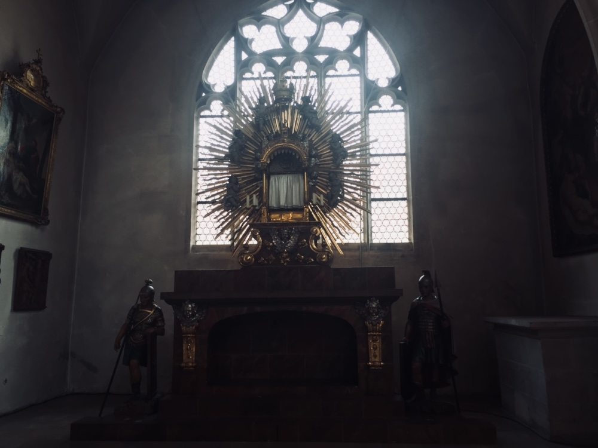
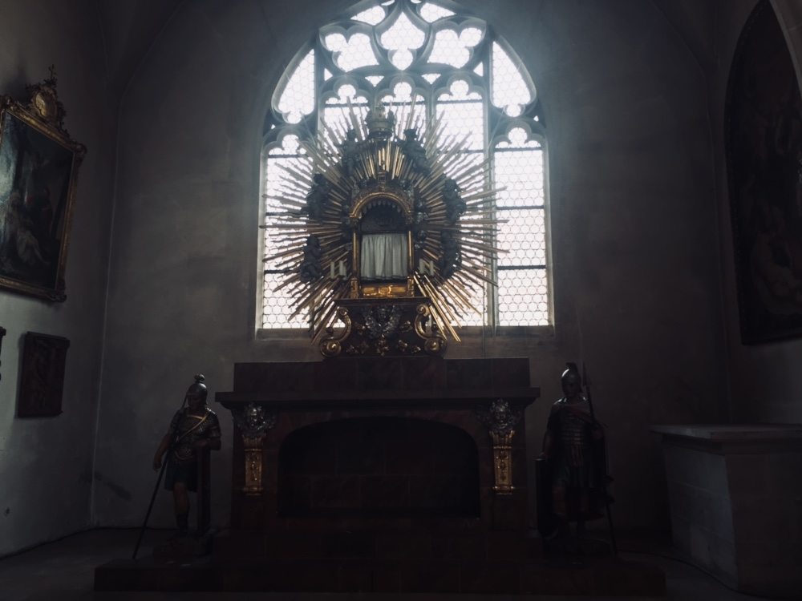

Hos familien SCHICKEL d. 28. august - d. (pas)
august + september
d. 28. august Familien Schickel kom og hentede mig hos Huber ved ca. 16. tiden, jeg havde pakket min store 21 kilo tunge taske forinden så alt var klar til at jeg skulle videre. d. 29. august Dagen efter, havde Mathias,(Faren) en "historie-sightseeing" tur for små børn (8-12 år) Der kom Korbinian og jeg så med. Så spillede vi lidt fobold spiste frokost, og så tog Korbinian, mig, og to af hans venner ud og badede i Ingolstadt Freibad kl. 15.00.
BILLEDER
d. 31. august I morges var vi inde i storcentret "west park" og købe hæfter ind til skole. Her får man dem jo ikke bare leveret gratis. Så fik vi en Döner, den var nu meget god.
d. 1. September I morges kl. 05, var der en gigantisk eksplosion i Ingolstadt. Det var en gas-beholder 20 km. væk fra hvor vi bor, som sprang i luften. Hældigvis kom ingen til skade.
Oktober
KRANKENWAGEN! KRANKENWAGEN! KRANKENWAGEN! KRANKENWAGEN! KRANKENWAGEN! KRANKENWAGEN! KRANKENWAGEN! KRANKENWAGEN! KRANKENWAGEN! KRANKENWAGEN! KRANKENWAGEN! KRANKENWAGEN! KRANKENWAGEN! KRANKENWAGEN! KRANKENWAGEN! KRANKENWAGEN! KRANKENWAGEN! KRANKENWAGEN! KRANKENWAGEN! KRANKENWAGEN! KRANKENWAGEN! KRANKENWAGEN! KRANKENWAGEN! KRANKENWAGEN! KRANKENWAGEN! KRANKENWAGEN! KRANKENWAGEN! KRANKENWAGEN! KRANKENWAGEN! KRANKENWAGEN! KRANKENWAGEN! KRANKENWAGEN! KRANKENWAGEN! KRANKENWAGEN! KRANKENWAGEN! KRANKENWAGEN! KRANKENWAGEN! KRANKENWAGEN! KRANKENWAGEN! KRANKENWAGEN! KRANKENWAGEN! KRANKENWAGEN! KRANKENWAGEN! KRANKENWAGEN! KRANKENWAGEN! KRANKENWAGEN! KRANKENWAGEN! KRANKENWAGEN! KRANKENWAGEN! KRANKENWAGEN! KRANKENWAGEN! KRANKENWAGEN! KRANKENWAGEN! KRANKENWAGEN! KRANKENWAGEN! KRANKENWAGEN! KRANKENWAGEN! KRANKENWAGEN! KRANKENWAGEN! KRANKENWAGEN! KRANKENWAGEN! KRANKENWAGEN! KRANKENWAGEN! KRANKENWAGEN! KRANKENWAGEN! KRANKENWAGEN! KRANKENWAGEN! KRANKENWAGEN! KRANKENWAGEN! KRANKENWAGEN! KRANKENWAGEN! KRANKENWAGEN! KRANKENWAGEN! KRANKENWAGEN! KRANKENWAGEN! KRANKENWAGEN! KRANKENWAGEN! KRANKENWAGEN! KRANKENWAGEN! KRANKENWAGEN! KRANKENWAGEN! KRANKENWAGEN! KRANKENWAGEN! KRANKENWAGEN! KRANKENWAGEN! KRANKENWAGEN! KRANKENWAGEN! KRANKENWAGEN! KRANKENWAGEN! KRANKENWAGEN! KRANKENWAGEN! KRANKENWAGEN! KRANKENWAGEN! KRANKENWAGEN! KRANKENWAGEN! KRANKENWAGEN! KRANKENWAGEN! KRANKENWAGEN! KRANKENWAGEN! KRANKENWAGEN! KRANKENWAGEN! KRANKENWAGEN! KRANKENWAGEN! KRANKENWAGEN! KRANKENWAGEN! KRANKENWAGEN! KRANKENWAGEN! KRANKENWAGEN! KRANKENWAGEN! KRANKENWAGEN! KRANKENWAGEN! KRANKENWAGEN! KRANKENWAGEN! KRANKENWAGEN! KRANKENWAGEN! KRANKENWAGEN! KRANKENWAGEN! KRANKENWAGEN! KRANKENWAGEN! KRANKENWAGEN! KRANKENWAGEN! KRANKENWAGEN! KRANKENWAGEN! KRANKENWAGEN! KRANKENWAGEN! KRANKENWAGEN! KRANKENWAGEN! KRANKENWAGEN! KRANKENWAGEN! KRANKENWAGEN! KRANKENWAGEN! KRANKENWAGEN! KRANKENWAGEN! KRANKENWAGEN! KRANKENWAGEN! KRANKENWAGEN! KRANKENWAGEN! KRANKENWAGEN! KRANKENWAGEN! KRANKENWAGEN! KRANKENWAGEN! KRANKENWAGEN! KRANKENWAGEN! KRANKENWAGEN! KRANKENWAGEN! KRANKENWAGEN! KRANKENWAGEN! KRANKENWAGEN! KRANKENWAGEN! KRANKENWAGEN! KRANKENWAGEN! KRANKENWAGEN! KRANKENWAGEN! KRANKENWAGEN! KRANKENWAGEN! KRANKENWAGEN! KRANKENWAGEN! KRANKENWAGEN! KRANKENWAGEN! KRANKENWAGEN! KRANKENWAGEN! KRANKENWAGEN! KRANKENWAGEN! KRANKENWAGEN! KRANKENWAGEN! KRANKENWAGEN! KRANKENWAGEN! KRANKENWAGEN! KRANKENWAGEN! KRANKENWAGEN! KRANKENWAGEN! KRANKENWAGEN! KRANKENWAGEN! KRANKENWAGEN! KRANKENWAGEN! KRANKENWAGEN! KRANKENWAGEN! KRANKENWAGEN! KRANKENWAGEN! KRANKENWAGEN! KRANKENWAGEN! KRANKENWAGEN! KRANKENWAGEN! KRANKENWAGEN! KRANKENWAGEN! KRANKENWAGEN! KRANKENWAGEN! KRANKENWAGEN! KRANKENWAGEN! KRANKENWAGEN! KRANKENWAGEN! KRANKENWAGEN! KRANKENWAGEN! KRANKENWAGEN! KRANKENWAGEN! KRANKENWAGEN! KRANKENWAGEN! KRANKENWAGEN! KRANKENWAGEN! KRANKENWAGEN! KRANKENWAGEN! KRANKENWAGEN! KRANKENWAGEN! KRANKENWAGEN! KRANKENWAGEN! KRANKENWAGEN! KRANKENWAGEN! KRANKENWAGEN! KRANKENWAGEN! KRANKENWAGEN! KRANKENWAGEN! KRANKENWAGEN! KRANKENWAGEN! KRANKENWAGEN! KRANKENWAGEN! KRANKENWAGEN! KRANKENWAGEN! KRANKENWAGEN! KRANKENWAGEN! KRANKENWAGEN! KRANKENWAGEN! KRANKENWAGEN! KRANKENWAGEN! KRANKENWAGEN! KRANKENWAGEN! KRANKENWAGEN! KRANKENWAGEN! KRANKENWAGEN! KRANKENWAGEN! KRANKENWAGEN! KRANKENWAGEN! KRANKENWAGEN! KRANKENWAGEN! KRANKENWAGEN! KRANKENWAGEN! KRANKENWAGEN! KRANKENWAGEN! KRANKENWAGEN! KRANKENWAGEN! KRANKENWAGEN! KRANKENWAGEN! KRANKENWAGEN! KRANKENWAGEN! KRANKENWAGEN! KRANKENWAGEN! KRANKENWAGEN! KRANKENWAGEN! KRANKENWAGEN! KRANKENWAGEN! KRANKENWAGEN! KRANKENWAGEN! KRANKENWAGEN! KRANKENWAGEN! KRANKENWAGEN! KRANKENWAGEN! KRANKENWAGEN! KRANKENWAGEN! KRANKENWAGEN! KRANKENWAGEN! KRANKENWAGEN! KRANKENWAGEN! KRANKENWAGEN! KRANKENWAGEN! KRANKENWAGEN! KRANKENWAGEN! KRANKENWAGEN! KRANKENWAGEN! KRANKENWAGEN! KRANKENWAGEN! KRANKENWAGEN! KRANKENWAGEN! KRANKENWAGEN! KRANKENWAGEN! KRANKENWAGEN! KRANKENWAGEN! KRANKENWAGEN! KRANKENWAGEN! KRANKENWAGEN! KRANKENWAGEN! KRANKENWAGEN! KRANKENWAGEN! KRANKENWAGEN! KRANKENWAGEN! KRANKENWAGEN! KRANKENWAGEN! KRANKENWAGEN! KRANKENWAGEN! KRANKENWAGEN! KRANKENWAGEN! KRANKENWAGEN! KRANKENWAGEN! KRANKENWAGEN! KRANKENWAGEN! KRANKENWAGEN! KRANKENWAGEN! KRANKENWAGEN! KRANKENWAGEN! KRANKENWAGEN! KRANKENWAGEN! KRANKENWAGEN! KRANKENWAGEN! KRANKENWAGEN! KRANKENWAGEN! KRANKENWAGEN! KRANKENWAGEN! KRANKENWAGEN! KRANKENWAGEN! KRANKENWAGEN! KRANKENWAGEN! KRANKENWAGEN! KRANKENWAGEN! KRANKENWAGEN! KRANKENWAGEN! KRANKENWAGEN! KRANKENWAGEN! KRANKENWAGEN! KRANKENWAGEN! KRANKENWAGEN! KRANKENWAGEN! KRANKENWAGEN! KRANKENWAGEN! KRANKENWAGEN! KRANKENWAGEN! KRANKENWAGEN! KRANKENWAGEN! KRANKENWAGEN! KRANKENWAGEN! KRANKENWAGEN! KRANKENWAGEN! KRANKENWAGEN! KRANKENWAGEN! KRANKENWAGEN! KRANKENWAGEN! KRANKENWAGEN! KRANKENWAGEN! KRANKENWAGEN!
november
KRANKENWAGEN! KRANKENWAGEN! KRANKENWAGEN! KRANKENWAGEN! KRANKENWAGEN! KRANKENWAGEN! KRANKENWAGEN! KRANKENWAGEN! KRANKENWAGEN! KRANKENWAGEN! KRANKENWAGEN! KRANKENWAGEN! KRANKENWAGEN! KRANKENWAGEN! KRANKENWAGEN! KRANKENWAGEN! KRANKENWAGEN! KRANKENWAGEN! KRANKENWAGEN! KRANKENWAGEN! KRANKENWAGEN! KRANKENWAGEN! KRANKENWAGEN! KRANKENWAGEN! KRANKENWAGEN! KRANKENWAGEN! KRANKENWAGEN! KRANKENWAGEN! KRANKENWAGEN! KRANKENWAGEN! KRANKENWAGEN! KRANKENWAGEN! KRANKENWAGEN! KRANKENWAGEN! KRANKENWAGEN! KRANKENWAGEN! KRANKENWAGEN! KRANKENWAGEN! KRANKENWAGEN! KRANKENWAGEN! KRANKENWAGEN! KRANKENWAGEN! KRANKENWAGEN! KRANKENWAGEN! KRANKENWAGEN! KRANKENWAGEN! KRANKENWAGEN! KRANKENWAGEN! KRANKENWAGEN! KRANKENWAGEN! KRANKENWAGEN! KRANKENWAGEN! KRANKENWAGEN! KRANKENWAGEN! KRANKENWAGEN! KRANKENWAGEN! KRANKENWAGEN! KRANKENWAGEN! KRANKENWAGEN! KRANKENWAGEN! KRANKENWAGEN! KRANKENWAGEN! KRANKENWAGEN! KRANKENWAGEN! KRANKENWAGEN! KRANKENWAGEN! KRANKENWAGEN! KRANKENWAGEN! KRANKENWAGEN! KRANKENWAGEN! KRANKENWAGEN! KRANKENWAGEN! KRANKENWAGEN! KRANKENWAGEN! KRANKENWAGEN! KRANKENWAGEN! KRANKENWAGEN! KRANKENWAGEN! KRANKENWAGEN! KRANKENWAGEN! KRANKENWAGEN! KRANKENWAGEN! KRANKENWAGEN! KRANKENWAGEN! KRANKENWAGEN! KRANKENWAGEN! KRANKENWAGEN! KRANKENWAGEN! KRANKENWAGEN! KRANKENWAGEN! KRANKENWAGEN! KRANKENWAGEN! KRANKENWAGEN! KRANKENWAGEN! KRANKENWAGEN! KRANKENWAGEN! KRANKENWAGEN! KRANKENWAGEN! KRANKENWAGEN! KRANKENWAGEN! KRANKENWAGEN! KRANKENWAGEN! KRANKENWAGEN! KRANKENWAGEN! KRANKENWAGEN! KRANKENWAGEN! KRANKENWAGEN! KRANKENWAGEN! KRANKENWAGEN! KRANKENWAGEN! KRANKENWAGEN! KRANKENWAGEN! KRANKENWAGEN! KRANKENWAGEN! KRANKENWAGEN! KRANKENWAGEN! KRANKENWAGEN! KRANKENWAGEN! KRANKENWAGEN! KRANKENWAGEN! KRANKENWAGEN! KRANKENWAGEN! KRANKENWAGEN! KRANKENWAGEN! KRANKENWAGEN! KRANKENWAGEN! KRANKENWAGEN! KRANKENWAGEN! KRANKENWAGEN! KRANKENWAGEN! KRANKENWAGEN! KRANKENWAGEN! KRANKENWAGEN! KRANKENWAGEN! KRANKENWAGEN! KRANKENWAGEN! KRANKENWAGEN! KRANKENWAGEN! KRANKENWAGEN! KRANKENWAGEN! KRANKENWAGEN! KRANKENWAGEN! KRANKENWAGEN! KRANKENWAGEN! KRANKENWAGEN! KRANKENWAGEN! KRANKENWAGEN! KRANKENWAGEN! KRANKENWAGEN! KRANKENWAGEN! KRANKENWAGEN! KRANKENWAGEN! KRANKENWAGEN! KRANKENWAGEN! KRANKENWAGEN! KRANKENWAGEN! KRANKENWAGEN! KRANKENWAGEN! KRANKENWAGEN! KRANKENWAGEN! KRANKENWAGEN! KRANKENWAGEN! KRANKENWAGEN! KRANKENWAGEN! KRANKENWAGEN! KRANKENWAGEN! KRANKENWAGEN! KRANKENWAGEN! KRANKENWAGEN! KRANKENWAGEN! KRANKENWAGEN! KRANKENWAGEN! KRANKENWAGEN! KRANKENWAGEN! KRANKENWAGEN! KRANKENWAGEN! KRANKENWAGEN! KRANKENWAGEN! KRANKENWAGEN! KRANKENWAGEN! KRANKENWAGEN! KRANKENWAGEN! KRANKENWAGEN! KRANKENWAGEN! KRANKENWAGEN! KRANKENWAGEN! KRANKENWAGEN! KRANKENWAGEN! KRANKENWAGEN! KRANKENWAGEN! KRANKENWAGEN! KRANKENWAGEN! KRANKENWAGEN! KRANKENWAGEN! KRANKENWAGEN! KRANKENWAGEN! KRANKENWAGEN! KRANKENWAGEN! KRANKENWAGEN! KRANKENWAGEN! KRANKENWAGEN! KRANKENWAGEN! KRANKENWAGEN! KRANKENWAGEN! KRANKENWAGEN! KRANKENWAGEN! KRANKENWAGEN! KRANKENWAGEN! KRANKENWAGEN! KRANKENWAGEN! KRANKENWAGEN! KRANKENWAGEN! KRANKENWAGEN! KRANKENWAGEN! KRANKENWAGEN! KRANKENWAGEN! KRANKENWAGEN! KRANKENWAGEN! KRANKENWAGEN! KRANKENWAGEN! KRANKENWAGEN! KRANKENWAGEN! KRANKENWAGEN! KRANKENWAGEN! KRANKENWAGEN! KRANKENWAGEN! KRANKENWAGEN! KRANKENWAGEN! KRANKENWAGEN! KRANKENWAGEN! KRANKENWAGEN! KRANKENWAGEN! KRANKENWAGEN! KRANKENWAGEN! KRANKENWAGEN! KRANKENWAGEN! KRANKENWAGEN! KRANKENWAGEN! KRANKENWAGEN! KRANKENWAGEN! KRANKENWAGEN! KRANKENWAGEN! KRANKENWAGEN! KRANKENWAGEN! KRANKENWAGEN! KRANKENWAGEN! KRANKENWAGEN! KRANKENWAGEN! KRANKENWAGEN! KRANKENWAGEN! KRANKENWAGEN! KRANKENWAGEN! KRANKENWAGEN! KRANKENWAGEN! KRANKENWAGEN! KRANKENWAGEN! KRANKENWAGEN! KRANKENWAGEN! KRANKENWAGEN! KRANKENWAGEN! KRANKENWAGEN! KRANKENWAGEN! KRANKENWAGEN! KRANKENWAGEN! KRANKENWAGEN! KRANKENWAGEN! KRANKENWAGEN! KRANKENWAGEN! KRANKENWAGEN! KRANKENWAGEN! KRANKENWAGEN! KRANKENWAGEN! KRANKENWAGEN! KRANKENWAGEN! KRANKENWAGEN! KRANKENWAGEN! KRANKENWAGEN! KRANKENWAGEN! KRANKENWAGEN! KRANKENWAGEN! KRANKENWAGEN! KRANKENWAGEN! KRANKENWAGEN! KRANKENWAGEN! KRANKENWAGEN! KRANKENWAGEN! KRANKENWAGEN! KRANKENWAGEN! KRANKENWAGEN! KRANKENWAGEN! KRANKENWAGEN! KRANKENWAGEN! KRANKENWAGEN! KRANKENWAGEN! KRANKENWAGEN! KRANKENWAGEN! KRANKENWAGEN! KRANKENWAGEN! KRANKENWAGEN! KRANKENWAGEN! KRANKENWAGEN! KRANKENWAGEN! KRANKENWAGEN! KRANKENWAGEN! KRANKENWAGEN! KRANKENWAGEN! KRANKENWAGEN! KRANKENWAGEN! KRANKENWAGEN! KRANKENWAGEN! KRANKENWAGEN! KRANKENWAGEN! KRANKENWAGEN! KRANKENWAGEN! KRANKENWAGEN! KRANKENWAGEN! KRANKENWAGEN! KRANKENWAGEN! KRANKENWAGEN! KRANKENWAGEN! KRANKENWAGEN! KRANKENWAGEN! KRANKENWAGEN! KRANKENWAGEN! KRANKENWAGEN! KRANKENWAGEN! KRANKENWAGEN! KRANKENWAGEN! KRANKENWAGEN! KRANKENWAGEN! KRANKENWAGEN! KRANKENWAGEN! KRANKENWAGEN! KRANKENWAGEN! KRANKENWAGEN! KRANKENWAGEN!
December
KRANKENWAGEN! KRANKENWAGEN! KRANKENWAGEN! KRANKENWAGEN! KRANKENWAGEN! KRANKENWAGEN! KRANKENWAGEN! KRANKENWAGEN! KRANKENWAGEN! KRANKENWAGEN! KRANKENWAGEN! KRANKENWAGEN! KRANKENWAGEN! KRANKENWAGEN! KRANKENWAGEN! KRANKENWAGEN! KRANKENWAGEN! KRANKENWAGEN! KRANKENWAGEN! KRANKENWAGEN! KRANKENWAGEN! KRANKENWAGEN! KRANKENWAGEN! KRANKENWAGEN! KRANKENWAGEN! KRANKENWAGEN! KRANKENWAGEN! KRANKENWAGEN! KRANKENWAGEN! KRANKENWAGEN! KRANKENWAGEN! KRANKENWAGEN! KRANKENWAGEN! KRANKENWAGEN! KRANKENWAGEN! KRANKENWAGEN! KRANKENWAGEN! KRANKENWAGEN! KRANKENWAGEN! KRANKENWAGEN! KRANKENWAGEN! KRANKENWAGEN! KRANKENWAGEN! KRANKENWAGEN! KRANKENWAGEN! KRANKENWAGEN! KRANKENWAGEN! KRANKENWAGEN! KRANKENWAGEN! KRANKENWAGEN! KRANKENWAGEN! KRANKENWAGEN! KRANKENWAGEN! KRANKENWAGEN! KRANKENWAGEN! KRANKENWAGEN! KRANKENWAGEN! KRANKENWAGEN! KRANKENWAGEN! KRANKENWAGEN! KRANKENWAGEN! KRANKENWAGEN! KRANKENWAGEN! KRANKENWAGEN! KRANKENWAGEN! KRANKENWAGEN! KRANKENWAGEN! KRANKENWAGEN! KRANKENWAGEN! KRANKENWAGEN! KRANKENWAGEN! KRANKENWAGEN! KRANKENWAGEN! KRANKENWAGEN! KRANKENWAGEN! KRANKENWAGEN! KRANKENWAGEN! KRANKENWAGEN! KRANKENWAGEN! KRANKENWAGEN! KRANKENWAGEN! KRANKENWAGEN! KRANKENWAGEN! KRANKENWAGEN! KRANKENWAGEN! KRANKENWAGEN! KRANKENWAGEN! KRANKENWAGEN! KRANKENWAGEN! KRANKENWAGEN! KRANKENWAGEN! KRANKENWAGEN! KRANKENWAGEN! KRANKENWAGEN! KRANKENWAGEN! KRANKENWAGEN! KRANKENWAGEN! KRANKENWAGEN! KRANKENWAGEN! KRANKENWAGEN! KRANKENWAGEN! KRANKENWAGEN! KRANKENWAGEN! KRANKENWAGEN! KRANKENWAGEN! KRANKENWAGEN! KRANKENWAGEN! KRANKENWAGEN! KRANKENWAGEN! KRANKENWAGEN! KRANKENWAGEN! KRANKENWAGEN! KRANKENWAGEN! KRANKENWAGEN! KRANKENWAGEN! KRANKENWAGEN! KRANKENWAGEN! KRANKENWAGEN! KRANKENWAGEN! KRANKENWAGEN! KRANKENWAGEN! KRANKENWAGEN! KRANKENWAGEN! KRANKENWAGEN! KRANKENWAGEN! KRANKENWAGEN! KRANKENWAGEN! KRANKENWAGEN! KRANKENWAGEN! KRANKENWAGEN! KRANKENWAGEN! KRANKENWAGEN! KRANKENWAGEN! KRANKENWAGEN! KRANKENWAGEN! KRANKENWAGEN! KRANKENWAGEN! KRANKENWAGEN! KRANKENWAGEN! KRANKENWAGEN! KRANKENWAGEN! KRANKENWAGEN! KRANKENWAGEN! KRANKENWAGEN! KRANKENWAGEN! KRANKENWAGEN! KRANKENWAGEN! KRANKENWAGEN! KRANKENWAGEN! KRANKENWAGEN! KRANKENWAGEN! KRANKENWAGEN! KRANKENWAGEN! KRANKENWAGEN! KRANKENWAGEN! KRANKENWAGEN! KRANKENWAGEN! KRANKENWAGEN! KRANKENWAGEN! KRANKENWAGEN! KRANKENWAGEN! KRANKENWAGEN! KRANKENWAGEN! KRANKENWAGEN! KRANKENWAGEN! KRANKENWAGEN! KRANKENWAGEN! KRANKENWAGEN! KRANKENWAGEN! KRANKENWAGEN! KRANKENWAGEN! KRANKENWAGEN! KRANKENWAGEN! KRANKENWAGEN! KRANKENWAGEN! KRANKENWAGEN! KRANKENWAGEN! KRANKENWAGEN! KRANKENWAGEN! KRANKENWAGEN! KRANKENWAGEN! KRANKENWAGEN! KRANKENWAGEN! KRANKENWAGEN! KRANKENWAGEN! KRANKENWAGEN! KRANKENWAGEN! KRANKENWAGEN! KRANKENWAGEN! KRANKENWAGEN! KRANKENWAGEN! KRANKENWAGEN! KRANKENWAGEN! KRANKENWAGEN! KRANKENWAGEN! KRANKENWAGEN! KRANKENWAGEN! KRANKENWAGEN! KRANKENWAGEN! KRANKENWAGEN! KRANKENWAGEN! KRANKENWAGEN! KRANKENWAGEN! KRANKENWAGEN! KRANKENWAGEN! KRANKENWAGEN! KRANKENWAGEN! KRANKENWAGEN! KRANKENWAGEN! KRANKENWAGEN! KRANKENWAGEN! KRANKENWAGEN! KRANKENWAGEN! KRANKENWAGEN! KRANKENWAGEN! KRANKENWAGEN! KRANKENWAGEN! KRANKENWAGEN! KRANKENWAGEN! KRANKENWAGEN! KRANKENWAGEN! KRANKENWAGEN! KRANKENWAGEN! KRANKENWAGEN! KRANKENWAGEN! KRANKENWAGEN! KRANKENWAGEN! KRANKENWAGEN! KRANKENWAGEN! KRANKENWAGEN! KRANKENWAGEN! KRANKENWAGEN! KRANKENWAGEN! KRANKENWAGEN! KRANKENWAGEN! KRANKENWAGEN! KRANKENWAGEN! KRANKENWAGEN! KRANKENWAGEN! KRANKENWAGEN! KRANKENWAGEN! KRANKENWAGEN! KRANKENWAGEN! KRANKENWAGEN! KRANKENWAGEN! KRANKENWAGEN! KRANKENWAGEN! KRANKENWAGEN! KRANKENWAGEN! KRANKENWAGEN! KRANKENWAGEN! KRANKENWAGEN! KRANKENWAGEN! KRANKENWAGEN! KRANKENWAGEN! KRANKENWAGEN! KRANKENWAGEN! KRANKENWAGEN! KRANKENWAGEN! KRANKENWAGEN! KRANKENWAGEN! KRANKENWAGEN! KRANKENWAGEN! KRANKENWAGEN! KRANKENWAGEN! KRANKENWAGEN! KRANKENWAGEN! KRANKENWAGEN! KRANKENWAGEN! KRANKENWAGEN! KRANKENWAGEN! KRANKENWAGEN! KRANKENWAGEN! KRANKENWAGEN! KRANKENWAGEN! KRANKENWAGEN! KRANKENWAGEN! KRANKENWAGEN! KRANKENWAGEN! KRANKENWAGEN! KRANKENWAGEN! KRANKENWAGEN! KRANKENWAGEN! KRANKENWAGEN! KRANKENWAGEN! KRANKENWAGEN! KRANKENWAGEN! KRANKENWAGEN! KRANKENWAGEN! KRANKENWAGEN! KRANKENWAGEN! KRANKENWAGEN! KRANKENWAGEN! KRANKENWAGEN! KRANKENWAGEN! KRANKENWAGEN! KRANKENWAGEN! KRANKENWAGEN! KRANKENWAGEN! KRANKENWAGEN! KRANKENWAGEN! KRANKENWAGEN! KRANKENWAGEN! KRANKENWAGEN! KRANKENWAGEN! KRANKENWAGEN! KRANKENWAGEN! KRANKENWAGEN! KRANKENWAGEN! KRANKENWAGEN! KRANKENWAGEN! KRANKENWAGEN! KRANKENWAGEN! KRANKENWAGEN! KRANKENWAGEN! KRANKENWAGEN! KRANKENWAGEN! KRANKENWAGEN! KRANKENWAGEN! KRANKENWAGEN! KRANKENWAGEN! KRANKENWAGEN! KRANKENWAGEN! KRANKENWAGEN! KRANKENWAGEN! KRANKENWAGEN! KRANKENWAGEN! KRANKENWAGEN! KRANKENWAGEN! KRANKENWAGEN! KRANKENWAGEN! KRANKENWAGEN! KRANKENWAGEN! KRANKENWAGEN! KRANKENWAGEN! KRANKENWAGEN!
Top


 
